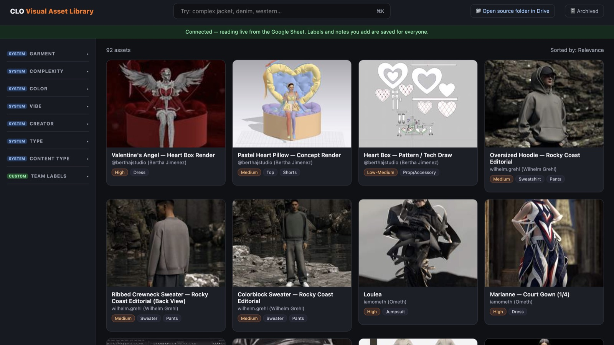
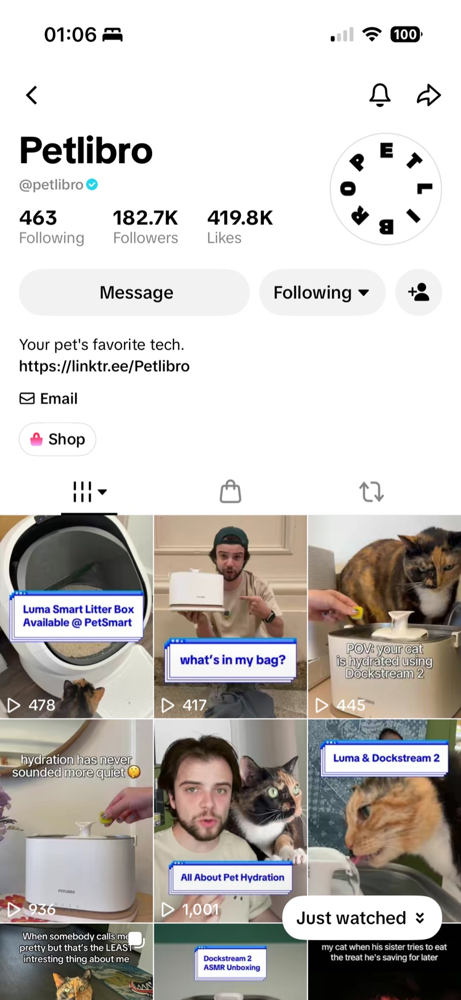

Internships where I owned a program end to end — and built the systems that made it repeatable after I left.

Marketing Analytics Intern, Brand Communications
May–Aug 2026New York, NY
Built the systems that gave a team without any prior data role its first real feedback loop — from a diagnostic content dashboard to an AI-tagged creative library.

Marketing Intern
May–Aug 2024Shenzhen, China
Owned a 60-creator partnership program end to end — outreach, briefs, and the systems behind both.